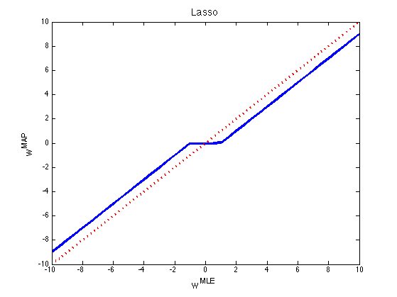
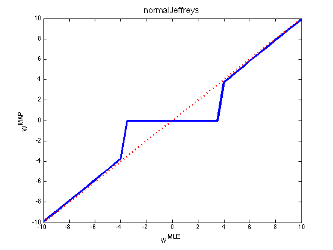
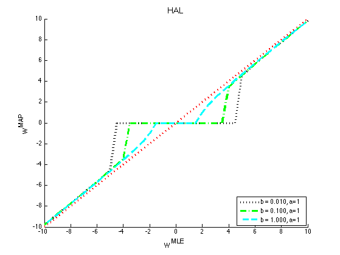

Visualize soft thresholding behavior of different log priors
PMTKauthor Francois Caron PMTKmodified Kevin Murphy
Contents
% This file is from pmtk3.googlecode.com function normalGammaThresholdPlotDemo()
%z=-10:.1:10; z=-10:0.5:10; x=-10.005:.05:10; for k=1:length(z)
laplace
c=1;
[temp outLap(k)]= min(.5*(z(k)-x).^2+c*abs(x));
normal Jeffreys
[temp outNJ(k)]=min(.5*(z(k)-x).^2+log(abs(x)));
Hierarchical adaptive lasso
bs = [0.01, 0.1, 1];
a = 1;
for i=1:length(bs)
[temp outHAL{i}(k)] = ...
min(.5*(z(k)-x).^2 + generalizedStudentNeglogpdf(x, a, bs(i)));
end
NG
%{ deltas = [0.01 0.75 1]; for i=1:length(deltas) delta = deltas(i); [temp outNG{i}(k)] = ... min(.5*(z(k)-x).^2+normalGammaNeglogpdf(x, delta, 1)'); end %} %{ %% normal inverse Gaussian deltas = [0.01 0.75 1 2]; for i=1:length(deltas) delta = deltas(i); [temp outNIG{i}(k)]=min(.5*(z(k)-x).^2+pen_NIG(x, delta, 1)); end %} %{ %% normal exponential Gaussian as = [0.5 0.5 0.5 5]; bs = [1 0.1 0.05 0.1]; as = [0.01 0.75 1]; % 2]; bs = ones(1,4); for i=1:length(as) [temp outNEG{i}(k)]=min(.5*(z(k)-x).^2+normalExpGammaNeglogpdf(x, as(i), bs(i))); end %}
end
Plot
fs = 14;
[styles, colors, symbols] = plotColors();
figure();
plot(z, x(outLap), [styles{1}, colors(1)], 'linewidth', 3);
hold on
plot(z, z, [styles{2}, colors(2)], 'linewidth', 3)
title('Lasso', 'fontsize', fs)
xlabel('w^{MLE}', 'fontsize', fs)
ylabel('w^{MAP}', 'fontsize', fs)
printPmtkFigure('lassoThreshold')
 [styles, colors, symbols] = plotColors();
figure();
plot(z, x(outNJ), [styles{1}, colors(1)], 'linewidth', 3);
hold on
plot(z, z, [styles{2}, colors(2)], 'linewidth', 3)
title('normalJeffreys', 'fontsize', fs)
xlabel('w^{MLE}', 'fontsize', fs)
ylabel('w^{MAP}', 'fontsize', fs)
printPmtkFigure('NJthreshold')
 figure(); hold on for i=1:length(bs) plot(z, x(outHAL{i}), [styles{i+1}, colors(i+2)], 'linewidth', 3); str{i} = sprintf('%s = %5.3f, a=1', 'b', bs(i)); end legend(str, 'location', 'southeast') plot(z, z, [styles{2}, colors(2)], 'linewidth', 3) title('HAL', 'fontsize', fs) xlabel('w^{MLE}', 'fontsize', fs) ylabel('w^{MAP}', 'fontsize', fs) printPmtkFigure('HALthreshold')
%{ figure(); hold on for i=1:length(deltas) plot(z, x(outNG{i}), [styles{i+1}, colors(i+2)], 'linewidth', 3); str{i} = sprintf('%s = %5.3f, c=1', '\delta', deltas(i)); end legend(str, 'location', 'southeast') plot(z, z, [styles{2}, colors(2)], 'linewidth', 3) title('normalGamma', 'fontsize', fs) xlabel('w^{MLE}', 'fontsize', fs) ylabel('w^{MAP}', 'fontsize', fs) printPmtkFigure('NGthreshold') %}
%{ figure(); hold on for i=1:length(deltas) plot(z,x(outNIG{i}),styles{i}, 'linewidth', 3); str{i} = sprintf('%s = %5.3f, c=1', '\delta', deltas(i)); end legend(str, 'location', 'southeast') plot(z,z,'r:', 'linewidth', 3) title('normalInvGauss') printPmtkFigure('NIGthreshold') end %}
%{ figure hold on for i=1:length(outNEG) plot(z,x(outNEG{i}),[styles{i+2}, colors(i+2)], 'linewidth', 3); str{i} = sprintf('a = %5.3f, b=%5.3f', as(i), bs(i)); end legend(str, 'location', 'southeast') plot(z, z, [styles{2}, colors(2)], 'linewidth', 3) title('normalExpGamma', 'fontsize', fs) xlabel('w^{MLE}', 'fontsize', fs) ylabel('w^{MAP}', 'fontsize', fs) printPmtkFigure('NEGthreshold') %}
end
function out = pen_NIG(w, delta, gamma) tmp = sqrt(delta^2 + w.^2); out = log(tmp)-log(besselk(1,gamma*tmp)); end